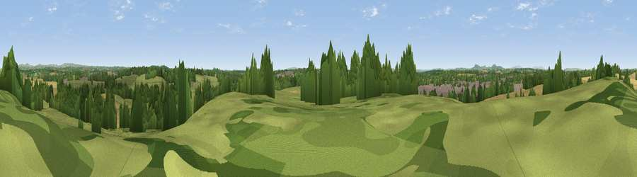

Viewpoint near Droitwich Spa
#28771 in England · top 61% of its area beats it · near Droitwich SpaWhere it is
The exact computed spot (SO 90075 64675). Click the marker for map links.
The view, rendered

A 360° render of this exact spot computed from the terrain model, tree cover and land cover — summer colours, afternoon light, calibrated against photographs of famous viewpoints. Real trees, hedges and buildings will differ in detail.
The panorama
Grey silhouette: terrain skyline in each direction (720 bearings, Earth curvature and refraction included). Dashed green: skyline with trees (+15 m) and buildings (+8 m) as obstacles. Blue strip: how far the ground is visible on each bearing.
Where the view opens
Wedge length = distance to the farthest visible ground on that bearing (vegetation-aware). Rings at 10, 25 and 50 km.
What fills the view
37% grassland · 34% cropland · 19% woodland · 10% built-up
Angular shares of the visible panorama (visual magnitude), not map area. Landscape diversity 0.56 (0–1 Shannon).
Key numbers
More beautiful places nearby
The staircase of upgrades: each row has a higher view potential than everything closer. Driving times are estimates from straight-line distance, calibrated against real road routing — check an actual route before setting out.
| Place | Direction | Drive | Score |
|---|---|---|---|
| Viewpoint near Elmbridge | N · 1 km | ~4 min | 48.3 |
| Viewpoint near Elmbridge | NNW · 3 km | ~7 min | 50.4 |
| Newland Common | S · 4 km | ~9 min | 52.0 |
| Viewpoint near Hanbury | E · 5 km | ~12 min | 57.1 |
| Viewpoint near Hanbury | ESE · 6 km | ~13 min | 62.1 |
| Viewpoint near Littleworth | SSW · 13 km | ~23 min | 65.8 |
| Viewpoint near Abberley | W · 14 km | ~25 min | 77.5 |
| Viewpoint near Abberley | W · 15 km | ~26 min | 78.1 |
52.28013, -2.14690 · source: screening · position refined by local search. Computed location — check access rights before visiting.